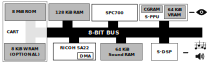
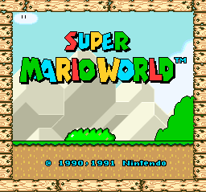

This article is part of a study about the ports of Another World. It is highly recommended to read Another World 101 before reading this.
The Super Fami-Com ("FAMIly COMputer") was released in Japan on November 21, 1990.
The initial shipment of 300,000 units sold out within hours. The frenzy was such that the government requested Nintendo to release its future systems on weekends to avoid further disturbances.
It took almost a year for the renamed SNES (Super Nintendo Entertainment System) to reach North America on September 9, 1991. Six months later the much awaited console finally got an European release on April 1992. In North America, 721[1] games[2] were published over the console lifespan, among them several critical and commercial successes such as Super Mario World, Zelda III, Mario Kart, F-Zero, Super Metroid, and Donkey Kong Country.
Having sold close to 50 million units over its nine-year lifespan (1991-1999), it is one of the most successful and popular consoles of all time.
The SNES is a departure in this series. All the machines studied so far ran either on a Motorola 68000 or an Intel x86. The SNES's CPU name sounds esoteric but the Ricoh 5A22 is in fact a 6502 on steroids.
On the list of enhancements the CPU features 16-bit registers, a DMA unit, a 24-bit address Bus-A, an uncanny second 8-bit address Bus-B (the two buses are used to declare src/dst on DMA transfers), and the ability to generate interrupts on VBLANK and HBLANK.
 Even though it seems to benefit from a generous 128 KiB of RAM, the machine appears much less powerful than the Genesis with a weak Ricoh running at 3.58MHz and an equally unimpressive 8-bit data bus. These hardware choices were not unwise since these components were not critical parts of a game. The system instead relies on powerful video (S-PPU) and audio (S-DSP) chips.
The S-PPU (Picture Processing Unit) is the component in charge of the video system. It was at the time a sprite powerhouse with an impressive color depth allowing 15-bit per pixel and RGB blending between layers.
|
|
|
Mode # Colors for BackGround Resolution (NTSC) Resolution (PAL)
1 2 3 4
=================================================================================
0 4 4 4 4 256x224 256x239
1 16 16 4 - 256x224 256x239
2 16 16 - - 256x224 256x239
3 256 16 - - 256x224 256x239
4 256 4 - - 256x224 256x239
5 16 4 - - 512x448 512x478
6 16 - - - 512x448 512x478
7 256 - - - 256x224 256x239
7EXT 256 128 - - 256x224 256x239
Background are made of tiles. For each background, the tile layout is determined by a "Tilemap". Tile dimension is usually 8x8 where pixels are grouped per line per bitplane.
4BPP SNES TILE LAYOUT:
======================
BYTE BYTE
Line 0 bitplane0 Line 0 bitplane1
Line 1 bitplane0 Line 1 bitplane1
. .
. .
Line 7 bitplane0 Line 7 bitplane1
Line 0 bitplane2 Line 0 bitplane3
Line 1 bitplane2 Line 1 bitplane3
. .
. .
Line 7 bitplane2 Line 7 bitplane3
Tiles can also be 16x16 with an even weirder layout but this is a story for an other time. Sprites are not used during Another World gameplay and therefore not discussed further.
The resolution chosen for NTSC (256x224) and PAL (256x239) were not randomly chosen. These correspond to a known "action safe area[4]" guaranteed to be visible on a TV screen of the early 90s.
Actual TVs show about 224 lines of the signal, hence the commonly reported 256x224 resolution. But the vertical position may be slightly off center. Emulators and LCD HDTVs tend to use lines 8 to 231, but some TVs have been seen to show lines 12 to 235.
- wiki.nesdev.com (Overscan)
In the last entry about the Sega Genesis, we glanced over "Sonic, the Hedgehog" less than stellar PAL version. Nintendo did not make the same mistakes with its star title "Super Mario World".
While most developers used 256x224 which looked good on North American and Japanese TVs but resulted in black vertical borders on PAL TVs, Nintendo made the effort to use 256x239 and reorganize the tilemaps. They also accounted for the 60Hz/50hz refresh rate and made everything move on a 16ms/20ms accordingly to not slow down gameplay on PAL[5]. The work paid off with worldwide full-screen display and similar gameplay embodying Nintendo's commitment to high-quality.
| NTSC (256x224) |  PAL (256x239) |
Notice Nintendo's trick on PAL to fill the two extra 8x8 tile lines at the bottom with an increased "underground" visibility. Borders and text locations were adjusted accordingly. Keep in mind that PAL and NTSC TVs had 4:3 aspect ratio. Once transfered to screen, these tilemap appeared horizontally stretched.
Another World was ported to Super Nintendo by Rebecca Heineman around 1992 for Interplay. She was unable to answer questions before publication of this article. Information was gathered via "Burgertime: Out of This World" and bsnes-plus emulator to look under the hood.
We wanted to do Super Nintendo games and Out of This World really was a game we'd like to do. The immediate thought was that the Amiga was as super powerful computer and while the Super Nintendo was powerful it was no Amiga. There was no way we can actually do OotW on SNES, it just couldn't be done.
Well, anybody who's been following my career would know that "It couldn't be done" generally resulted in a "challenge accepted". And a challenge was accepted.
- Burgertime: Out of This World
The conversion seems to have happened on an accelerated Apple 2GS (which conveniently features the same 65C816 as the SNES) connected to SNES via a Sluggo 3 ROM emulator which Rebecca built herself.
I took the source code and I ran off to my little office and looked at the code and realized [...] all I really needed to do [...] was create a interpreter which would run the scripting language and optimize the hell out of the interpreter in order for it to run the game.
It took me about two, three weeks and I sat there doing nothing but translating line by line [...].
I looked at the function of 68k, figure out what it was really supposed to do, and wrote the equivalent in 65C816. I did this for every single function until eventually I had every single function in the game. Sure enough I was running out of this world on an Apple IIGS! It was running only about 10 frames per second more like 5/10fps on a very accelerated IIGS because I hadn't done any real optimizations.- Burgertime: Out of This World
These were different times. Knowing hardware in order to roll out your own Sluggo 3 devkit[6] and mastering Japanese were invaluable skills back then.
I then had a parallel cable going from the Apple IIGS to a Sluggo 3, itself connected to a Super Nintendo. I mostly used this handmade dev kit because interplay was just too cheap to buy me a official Super Nintendo dev kit. In fact when we were developing stuff on the Super Nintendo initially we were actually victims of xenophobia from Japan.
When we got permission to start doing Super Nintendo software, Nintendo gave us their manuals. They were all in Japanese and they told us that it was going to take anywhere from you know 2 to 6 months before they got the translations.
日本語を話しますか?[7], Do you speak Japanese? I do!- Burgertime: Out of This World
The CPU renders to three local framebuffers located in RAM. When a frame is completed, it is DMA copied[8] to VRAM. To avoid tearing, a double buffer is used in VRAM[9].
The console is setup in mode 1 which has three background but everything happens in Background 1. Every time a new frame is available, the tilemap of the matching double buffer is updated. The framebuffers are faked via 8x8 unique tiles.
Thanks to the planar layout of its tiles, this version could render alike the Atari ST and cruise with lines segment of 8 pixel written in 4 operations.
A significant slowdown is the bytecode which was designed with 16-bit registers in mind. The Ricoh has 16-bit registers but its 8-bit data bus made store/load operations twice as slow. Even with DMA pushing all these bytes from RAM to VRAM was a problem. It seems it was an even harder problem to implement COPY opcode.
The solution to both CPU and bandwidth issues were to use only 28x20 out of the 32x28 tiles available. This effectively lowered the resolution from 256x224 to 224x160.
Perhaps the most interesting part of this port is the iteration process[10].
The SNES was based on two powerful chips, a S-PPU and a S-DSP, with a modest CPU as the maestro of the orchestra.
To provision for developers with other needs, Nintendo designed the cartridge port carefully. The Bus-A address space (which the cartridge is connected to) features a reserved section ($6000–$7FFF)[11]. The cartridge port also has a special bus line (/CART) which let the CPU signal when it is accessing the cartridge address space.
These two features combined allowed developers to ship carts (a.k.a Game Pak) with special chips on-board. These "enhancement" chips monitor bus-A usage and use the reserved memory space to map their registers in order to receive commands from the CPU.
This is the feature Rebecca attempted to leverage first in a series of four different revisions.
Attempt 1: Super-FX chip
I thought I could get this game running at 60 frames per second by putting a super FX chip in there. I got a copy of Starfox I pull the chip out figured out how the chip worked and started using it. I had OotW running at 60fps! I said "hey Brian the game is getting ready to ship, here's the cartridge I'm gonna need".
He looks at the price list and says "Can you get rid of super FX chip? It's too expensive!".
- Burgertime: Out of This World[12]
Attempt 2: Static RAM
I took all the super FX code out and then changed it over to just software rendering. But there were certain parts of the software rendering which was running really really slow. One of them is like I had to take a full screen background and copy it to another one. I found this trick that if I had static memory [WRAM] on the cartridge I can actually copy that static memory at super speeds using DMA and I said "Give me a cartridge that uses a static memory and I could get to 30 frames per second".
And he goes like "That's too expensive!".
- Burgertime: Out of This World
Attempt 3: Fast cartridge (3.58Mhz)
So with no battery backed up RAM, we're gonna have to save the game with little entry code [...]. When you get to a certain level it says here is your code [...] you write it down to a piece of paper and that's how you save your games.
Okay, no super FX chip, no battery backed up ram alright, I did make it so that I could get the software running again to run at about 30 frames per second if of course I'm using a fast cartridge because cartridges at the time you could buy them either 2.68Mhz [SlowROM] or 3.58Mhz [FastROM[13]].
To give you an idea, the SNES actually runs a 3.6Mhz. It's a pretty fast chip for the time but the ROMs that run at that speed costs a little bit more that roms that run at a slower speed.
Using a 3.6Mhz ROM you know my dev kit can ran and go to run at 10Mhz so it was no problem for you just to set the switch to run to dev kit I got it running really fast frame rate so it's looking good ready. Then Fargo comes out he said "Can you use the slower ROM it'll save 50 cents a cartridge.".- Burgertime: Out of This World
Attempt 4: Slow cartridge (2.68 Mhz)
Forced to use a slowROM, I found out that the game would run at best 20 frames per second. I tried little stunts like letterboxing the game, making it look like a movie but I'm actually rendering less which up the framerate but it wasn't quite getting it.
How the hell am I going to get this thing to run as fast as I want? Then it dawned on me the DMA registers in the SNES that I'm not using are sitting there. After reading the technical specs very carefully in Japanese I came to come to find out that those memory registers actually runs the full CPU 3.6Mhz speed.
The hardware registers are essentially values you could just write into and read into. There was about 32 bytes of memory that are used as registers but as long as you don't actually use them, you just put values in and read them back.
I put a 32 byte function that would draw a scanline of polygon data in there. I had a 10% speed improvement and I got my frames per second.
Of course emulator authors later on would hate my guts. "Why is it that this cartridge doesn't run on my emulator?".- Burgertime: Out of This World
With a limited development time window, Another World on PAL system did not benefit of a special horizontal makeover. The PAL version of the game shipped with the same tile resolution as the NTSC version.
| NTSC | PAL |
| NTSC | PAL |
Compared to the Genesis and Amiga, the SNES was a lower resolution but the result still looks impressively good.
Thanks to the 15-bit color depth, the colors on SNES are an exact conversion of the Amiga 12-bit colors. The facial expression on Lester were not altered which may mean the Genesis conversion was done after the SNES with special artwork requested to Eric Chahi.
The Creator expressed how he felt about the SNES port. Therefore I will not elaborate on it.
I have a print of the cover of "Out Of This World". It is signed by Eric Chahi and it says in French "Congratulations for the completion and the shipping of the Super Nintendo version of out of this world". He gave me that painting already framed [...] and I'm like "oh my god thank you very much". It's been hanging on my wall ever since.
- Burgertime: Out of This World
Another World on Game Boy Advanced.
| ^ | [ 1] | 721 in North America, 517 in Europe, 1,448 in Japan, 231 on Satellaview, and 13 on Sufami Turbo for a grand total of 1757 titles. |
| ^ | [ 2] | Wikipedia, SNES games |
| ^ | [ 3] | SNES Schematics, Ports, and Pinouts |
| ^ | [ 4] | Overscan |
| ^ | [ 5] | Super Mario World Wiki: Version Differences |
| ^ | [ 6] | Apple II RoundTable: Sluggo III |
| ^ | [ 7] | Nihongo wo hanashimasuka? which actually means 'Do you speak Japanese?'. Thanks to an_ko@news.ycombinator.com for the explanation. |
| ^ | [ 8] | BSnes Plus Debugger |
| ^ | [ 9] | BSnes Plus Tileviewer screenshot |
| ^ | [10] | Burgertime 8/9/2015: Out of This World |
| ^ | [11] | RESERVED (enhancement chips memory) |
| ^ | [12] | Unfortunately Rebecca did not elaborate on how she obtained a Super FX (OotW was released in November 1992, StarFox in Oct 1993) or how she figured out the API. |
| ^ | [13] | SNO SNES SlowROM vs FastROM |
{kind=link}
{kind=link}